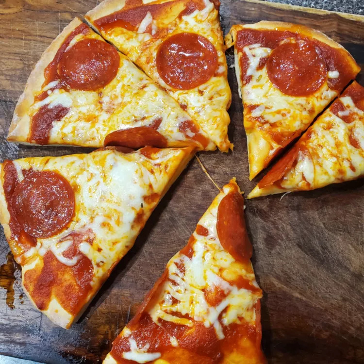

Pizza

Description
A two-ingredient pizza recipe for anyone.
Ingrdients
- 1 ½ cups of self-rising flour
- Greek yogurt
Steps
- Mix Ingredients: Mix the flour and yogurt until a shaggy dough forms.
- Knead: Transfer to a flour dusted work surface, then knead for 8 to 10 minutes. Add more flour as needed if the dough becomes too sticky.
- Parbake: Grease the pizza pan with cooking spray. Spread the dough to the edges of a pan. Parbake the crust for 5 to 7 minutes. Remove from the oven, then add sauce and toppings.
- Finish Baking: Return the pizza to the oven and bake until the crust is lightly browned.